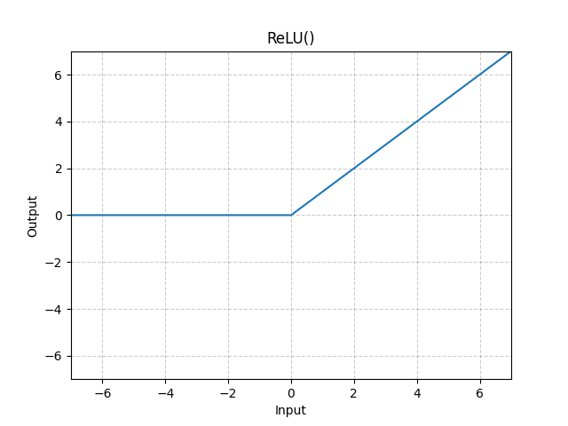

PyTorch深度学习
基于小土堆：https://www.bilibili.com/video/BV1hE411t7RN
安装
基于conda环境来安装
conda create --name pytorch python=3.11
查询已有环境
conda info --envs
conda environments:
base * D:\anaconda
pytorch D:\anaconda\envs\pytorch
激活pytorch环境
conda activate pytorch
其他命令
conda remove -n xxxxx(名字) --all # 环境删除命令
deactivate # 退出虚拟环境
pip list # 查看虚拟环境的库
访问pytorch网站：https://pytorch.org/get-started/locally/
截至2025年8月Start Locally条目给予python版本提示：
NOTE: Latest PyTorch requires Python 3.9 or later.
基于：Stable(2.7.1) - Windows - Pip - Python - CUDA 11.8
pip3 install torch torchvision torchaudio --index-url https://download.pytorch.org/whl/cu118
(pytorch) C:\Users\Karry>pip list
Package Version
----------------- ------------
filelock 3.13.1
fsspec 2024.6.1
Jinja2 3.1.4
MarkupSafe 2.1.5
mpmath 1.3.0
networkx 3.3
numpy 2.1.2
pillow 11.0.0
pip 25.1
setuptools 78.1.1
sympy 1.13.3
torch 2.7.1+cu118
torchaudio 2.7.1+cu118
torchvision 0.22.1+cu118
typing_extensions 4.12.2
wheel 0.45.1
验证：
import torch
torch.cuda.is_available() # True
两大法宝函数-dir与help
dir主要是来查看一个工具包下还有什么子工具包或者工具
help主要是查看一些工具有什么作用
比如help(torch.cuda.is_available)
help(torch.cuda.is_available)
Help on function is_available in module torch.cuda:
is_available() -> bool
Return a bool indicating if CUDA is currently available.
PyTorch数据读取
数据 —— Dataset（提供一种方式获取label） —— Dataloader（为后面的网络提供不同的数据形式）
组织结构：
+—— hymenoptera_data
| +—— train
| | —— ants
| | —— bees
对应代码：
from torch.utils.data import Dataset
from PIL import Image
import os
# MyData是自定义的数据集类，他继承了Dataset类，MyData(Dataset)这是继承动作
class MyData(Dataset):
# 初始化函数，初始化一些数据，比如图片路径，标签路径等等，__init__这是重写父类的方法
def __init__(self, root_dir, label_dir):
# 根集路径
self.root_dir = root_dir
# 标签路径，这其实表达了图片是什么分类
self.label_dir = label_dir
# 获取图片的路径，这个路径下存放着图片
self.path = os.path.join(self.root_dir, self.label_dir)
# 获取图片路径列表listdir
self.img_path = os.listdir(self.path)
# 获取数据，这个函数是必须写的，并且是必须返回两个值，一个是图片，一个是标签
def __getitem__(self, idx):
img_name = self.img_path[idx]
img_item_path = os.path.join(self.root_dir, self.label_dir, img_name)
img = Image.open(img_item_path)
label = self.label_dir
return img, label
def __len__(self):
return len(self.img_path)
root_dir = "hymenoptera_data\\train"
ant_label_dir = "ants"
bees_label_dir = "bees"
ants_dataset = MyData(root_dir, ant_label_dir)
bees_dataset = MyData(root_dir, bees_label_dir)
train_dataset = ants_dataset + bees_dataset
组织结构：
+—— hymenoptera_data_ex
| +—— train
| | —— ants_image
| | —— ants_label
| | —— bees_image
| | —— bees_label
对应代码：
from torch.utils.data import Dataset
from PIL import Image
import os
class MyData(Dataset):
def __init__(self, root_dir, img_dir, label_dir):
self.root_dir = root_dir
self.img_dir = img_dir
self.label_dir = label_dir
self.path_img = os.path.join(self.root_dir, self.img_dir)
self.path_label = os.path.join(self.root_dir, self.label_dir)
self.img_path = os.listdir(self.path_img)
self.label_path = os.listdir(self.path_label)
def __getitem__(self, item):
img_name = self.img_path[item]
img_item_path = os.path.join(self.path_img, img_name)
img = Image.open(img_item_path)
label_name = self.label_path[item]
label_item_path = os.path.join(self.path_label, label_name)
with open(label_item_path, "r", encoding="utf-8") as f:
label = f.read()
return img, label
root_dir = "hymenoptera_data_ex\\train"
img_dir = "ants_image"
label_dir = "ants_label"
ants_dataset = MyData(root_dir, img_dir, label_dir)
Tensorboard的使用
add_scalar
from torch.utils.tensorboard import SummaryWriter
writer = SummaryWriter("logs")
# writer.add_image()
# y = x
for i in range(100):
writer.add_scalar("y=i^2", i * i, i)
writer.close()
tensorboard --logdir=logs --port=6007
writer.add_scalar(“y=i^2”, i * i, i)，这个的参数分别是：标签、y、x
add_image
import numpy as np
from PIL import Image
from torch.utils.tensorboard import SummaryWriter
img_path = "hymenoptera_data/train/ants/0013035.jpg"
img_PIL = Image.open(img_path)
img_array = np.array(img_PIL)
# hymenoptera_data/train/ants/0013035.jpg
writer = SummaryWriter("logs")
writer.add_image("img", img_array, 1,dataformats="HWC")
# y = x
for i in range(100):
writer.add_scalar("y=i^2", i * i, i)
writer.close()
add_image(“img”, img_array, 1,dataformats=“HWC”)，这个参数分别是：标签、ndarray类型的图片、步骤、dataformats-HWC
Transforms的使用
Transforms主要是对图片的各种变换，是预处理？
from PIL import Image
from torchvision import transforms
img = Image.open('hymenoptera_data/train/ants/0013035.jpg')
tensor_trans = transforms.ToTensor()
tensor_img = tensor_trans(img)
print(tensor_img)
Image.open返回了PIL类型的图片，通过transforms.ToTensor()创建了工具对象，最后使用tensor_trans(img)转化为tensor类型
tensor数据类型：包装了神经网络所需要的理论基础参数
使用SummaryWriter将tensor_img写入
from PIL import Image
from torch.utils.tensorboard import SummaryWriter
from torchvision import transforms
img = Image.open('hymenoptera_data/train/ants/0013035.jpg')
tensor_trans = transforms.ToTensor()
tensor_img = tensor_trans(img)
# print(tensor_img)
writer = SummaryWriter('logs')
writer.add_image('tensor_img', tensor_img)
writer.close()
题外话，理解一下py的面向对象：
class Person:
def __init__(self, name):
self.name = name
def __call__(self):
print("hello", self.name)
def hello(self):
print("hello_ex", self.name)
person = Person("Karry")
person()
person.hello()
init方法实际上是一个构造方法，person = Person(“Karry”)执行后调用构造方法
call方法像初次见面问好一样person()执行后，调用call方法，是让实例像函数一样用的钩子方法
person.hello()只是一个类的普通方法
ToTensor的使用
ToTensor图片张量化工具
from PIL import Image
from torch.utils.tensorboard import SummaryWriter
from torchvision import transforms
writer = SummaryWriter('logs')
img = Image.open('images/pytorch.png')
toTensorTools = transforms.ToTensor()
img_tensor = toTensorTools(img)
writer.add_image('ToTensor', img_tensor)
writer.close()
Normalize的使用
Normalize归一化、标准化，均值为0，方差为1，数值位于-1到1之间
如果图片不是RGB模式需要做img.convert(‘RGB’)
writer = SummaryWriter('logs')
img = Image.open('images/pytorch.png')
# img转化为RGB
img = img.convert('RGB')
toTensorTools = transforms.ToTensor()
img_tensor = toTensorTools(img)
writer.add_image('ToTensor', img_tensor)
print(img_tensor[0][0][0])
# 归一化
transforms_normalize = transforms.Normalize([0.5, 0.5, 0.5], [0.5, 0.5, 0.5])
img_normalize = transforms_normalize(img_tensor)
print(img_normalize[0][0][0])
writer.close()
tensor(0.1333)
tensor(-0.7333)
0.1333*2 - 1 = -0.7333
Resize的使用
Resize重调整
# Resize的使用
print(img.size)
transforms_resize = transforms.Resize([128, 128])
img_resize = transforms_resize(img_tensor)
writer.add_image('Resize', img_resize, 0)
print(img_resize.size())
resize_2 = transforms.Resize(512)
transforms_compose = transforms.Compose([resize_2, toTensorTools])
img_resize_2 = transforms_compose(img)
writer.add_image('Compose', img_resize_2, 1)
起初我们使用img = Image.open(‘images/testFG.jpg’)，此时这是一个PIL图片，如何我们使用toTensorTools = transforms.ToTensor()创建张量转换工具，使用img_tensor = toTensorTools(img)将PIL图片转化为img_tensor张量图片，紧接着我们使用transforms_resize = transforms.Resize([128, 128])创建尺寸调整工具，使用img_resize = transforms_resize(img_tensor)对张量图片重调整。
Compose的意义在于它可以将多个图像变换操作（如缩放、裁剪、归一化等）按顺序组合成一个流水线，输入图像会依次通过这些变换。
我们使用transforms_compose = transforms.Compose([resize_2, toTensorTools])创建了一个工具链，resize_2用于调整图像尺寸，toTensorTools用于其转化为张量图片。
从img_resize_2 = transforms_compose(img)我们可以看到，参数img是一个PIL图片他通过Compose先后进行了重调整和张量化，最终返回img_resize_2张量图片。
提示：resize_2 = transforms.Resize(512)是一个等比例调整。
tensor(0.4039)
tensor(0.6797)
(3600, 2700)
torch.Size([3, 128, 128])
torch.Size([3, 512, 682])
RandomCrop的使用
RandomCrop随机裁剪
# RandomCrop的使用
# random_crop = transforms.RandomCrop(500, 1000)
random_crop = transforms.RandomCrop(512)
compose_random_crop = transforms.Compose([random_crop, toTensorTools])
for i in range(10):
img_random_crop = compose_random_crop(img)
writer.add_image('RandomCrop', img_random_crop, i)
使用TorchVision的数据集（DataSet）
CIFAR —— Canadian Institute For Advanced Research（加拿大高级研究所）
root数据集所在目录、train是训练集还是测试集、transform应用的变换操作或操作集合、download是否启用下载
train_set = torchvision.datasets.CIFAR10(root="./data", train=True, transform=transforms_compose_dataset, download=True)
test_set = torchvision.datasets.CIFAR10(root="./data", train=False, transform=transforms_compose_dataset, download=True)
CIFAR-10 and CIFAR-100 datasets
The CIFAR-10 dataset consists of 60000 32x32 colour images in 10 classes, with 6000 images per class. There are 50000 training images and 10000 test images.
CIFAR-10 数据集由 10 类的 60000 张 32x32 彩色图像组成，每类 6000 张图像。有 50000 张训练图像和 10000 张测试图像。
The dataset is divided into five training batches and one test batch, each with 10000 images. The test batch contains exactly 1000 randomly-selected images from each class. The training batches contain the remaining images in random order, but some training batches may contain more images from one class than another. Between them, the training batches contain exactly 5000 images from each class.
数据集分为五个训练批次和一个测试批次，每个训练批次有 10000 张图像。测试批次恰好包含每个类中随机选择的 1000 张图像。训练批次以随机顺序包含剩余的图像，但某些训练批次可能包含来自一个类的图像多于另一个类的图像。在它们之间，训练批次恰好包含每个类的 5000 张图像。
数据集联动Tensorboard
import torchvision
from torch.utils.tensorboard import SummaryWriter
tensorboard = SummaryWriter("p10")
transforms_compose_dataset = torchvision.transforms.Compose([torchvision.transforms.ToTensor()])
train_set = torchvision.datasets.CIFAR10(root="./data", train=True, transform=transforms_compose_dataset, download=True)
test_set = torchvision.datasets.CIFAR10(root="./data", train=False, transform=transforms_compose_dataset, download=True)
print(test_set[0])
for i in range(20):
img, target = test_set[i]
tensorboard.add_image("test_set", img, i)
tensorboard.close()
其中img, target = test_set[i]返回了一个元组

0号位是转化过后的张量图，1号位是其标签索引，数据的标签列表可以在test_set.classes中看到。
add_image源码提示
def add_image(
self, tag, img_tensor, global_step=None, walltime=None, dataformats="CHW"
):
tag, img_tensor, global_step=None分别对应tensorboard标签，张量图，以及步骤i
tensorboard.add_image("test_set", img, i)
注意：tensorboard使用过后须关闭tensorboard.close()
DataLoader的使用
torch.utils.data — PyTorch 2.8 documentation
参数初见：
-
dataset (Dataset) – dataset from which to load the data.
-
batch_size (int, optional) – how many samples per batch to load (default:
1). -
shuffle (bool, optional) – set to
Trueto have the data reshuffled at every epoch (default:False). -
batch_sampler (Sampler or Iterable*,* optional) – like
sampler, but returns a batch of indices at a time. Mutually exclusive withbatch_size,shuffle,sampler, anddrop_last. -
num_workers (int, optional) – how many subprocesses to use for data loading.
0means that the data will be loaded in the main process. (default:0) -
drop_last (bool, optional) – set to
Trueto drop the last incomplete batch, if the dataset size is not divisible by the batch size. IfFalseand the size of dataset is not divisible by the batch size, then the last batch will be smaller. (default:False)
# 准备的测试数据
test_data = torchvision.datasets.CIFAR10(root="./data", train=False, transform=torchvision.transforms.ToTensor(),
download=True)
# 创建测试数据集
test_loader = DataLoader(dataset=test_data, batch_size=64, shuffle=True, num_workers=0, drop_last=True)
dataset数据集、batch_size一次打包多少个、shuffle是否打乱、num_workers加载数据子进程数、drop_last多余部分是否删除
torch.Size([3, 32, 32])
3
cat
联动Tensorboard
import torchvision.datasets
from torch.utils.data import DataLoader
from torch.utils.tensorboard import SummaryWriter
# 准备的测试数据
test_data = torchvision.datasets.CIFAR10(root="./data", train=False, transform=torchvision.transforms.ToTensor(),
download=True)
# 创建测试数据集
test_loader = DataLoader(dataset=test_data, batch_size=64, shuffle=True, num_workers=0, drop_last=True)
image, target = test_data[0]
# 测试数据第一张图像的shape和标签
print(image.shape)
print(target)
print(test_data.classes[target])
print("____________________")
writer = SummaryWriter("DataLoader")
step = 0
for loaderX in test_loader:
images, targets = loaderX
# print(images.shape)
# print(targets)
writer.add_images("test_data_drop_last", images, step)
step += 1
writer.close()
利用Epoch变量控制训练或测试轮次
for epoch in range(2):
step = 0
for loaderX in test_loader:
images, targets = loaderX
# print(images.shape)
# print(targets)
writer.add_images("Epoch:{}".format(epoch), images, step)
step += 1
"Epoch:{}".format(epoch) 是 Python 的 字符串格式化 方法，它会将 epoch 的值动态插入到字符串的 {} 占位符中。
此时当shuffle=True时，Epoch0和Epoch1并不一样
test_loader = DataLoader(dataset=test_data, batch_size=64, shuffle=True, num_workers=0, drop_last=True)
神经网络(Neural Network)基本骨架
torch.nn — PyTorch 2.8 documentation
Module — PyTorch 2.8 documentation
import torch.nn as nn
import torch.nn.functional as F
class Model(nn.Module):
def __init__(self) -> None:
super().__init__()
self.conv1 = nn.Conv2d(1, 20, 5)
self.conv2 = nn.Conv2d(20, 20, 5)
def forward(self, x):
x = F.relu(self.conv1(x))
return F.relu(self.conv2(x))
forward前向传播：
def forward(self, x):
x = F.relu(self.conv1(x))
return F.relu(self.conv2(x))
x先经过一次conv1卷积，再经过一次relu非线性处理x = F.relu(self.conv1(x))
然后x在经过一次conv2卷积，再经过一次relu非线性处理，最后返回return F.relu(self.conv2(x))
简单的骨架
简单的骨架就是这样，有一个输入经过forward后每次加一
import torch
from torch import nn
class Module(nn.Module):
def __init__(self, *args, **kwargs) -> None:
super().__init__(*args, **kwargs)
def forward(self, input):
output = input + 1
return output
karry = Module()
x = torch.tensor(1.0)
print(karry(x))
convolution卷积操作
https://www.bilibili.com/video/BV1hE411t7RN?p=17
Stride跨步=1
Stride是每次跨步数，1就是每次跨一步

注意到红色部分就是对应位置相乘再相加
import torch
import torch.nn.functional as F
# 创建输入和核
input_matrix = torch.tensor([[1, 2, 0, 3, 1], [0, 1, 2, 3, 1], [1, 2, 1, 0, 0], [5, 2, 3, 1, 1], [2, 1, 0, 1, 1]])
kernel = torch.tensor([[1, 2, 1], [0, 1, 0], [2, 1, 0]])
# 改变维度
input_matrix = torch.reshape(input_matrix, (1, 1, 5, 5))
kernel = torch.reshape(kernel, (1, 1, 3, 3))
# 卷积
output_ans = F.conv2d(input_matrix, kernel, stride=1)
print(input_matrix.shape)
print(kernel.shape)
print(output_ans)
torch.Size([1, 1, 5, 5])
torch.Size([1, 1, 3, 3])
tensor([[[[10, 12, 12],
[18, 16, 16],
[13, 9, 3]]]])
Stride跨步=2

# 卷积
output_ans = F.conv2d(input_matrix, kernel, stride=2)
print(output_ans)
tensor([[[[10, 12],
[13, 3]]]])
Padding填充=1
Padding填充就是在原始数据的最外侧填充一些数据（像素），一般情况下是设置为零

一样地，红色部分对应位置相乘再相加，最外圈绿色为padding=1所产生的额外填充
# 卷积
output_ans = F.conv2d(input_matrix, kernel, stride=1, padding=1)
print(output_ans)
tensor([[[[ 1, 3, 4, 10, 8],
[ 5, 10, 12, 12, 6],
[ 7, 18, 16, 16, 8],
[11, 13, 9, 3, 4],
[14, 13, 9, 7, 4]]]])
Convolution Layers卷积层
torch.nn — PyTorch 2.8 documentation
class torch.nn.Conv2d(in_channels, out_channels, kernel_size, stride=1, padding=0, dilation=1, groups=1, bias=True, padding_mode=‘zeros’, device=None, dtype=None)
其中最主要的参数设置是这五个：in_channels, out_channels, kernel_size, stride=1, padding=0

weight实际上就是卷积核，input是通道数据，bias是偏置

卷积层的 每个输出通道 都是 所有输入通道的加权卷积结果相加，权重就是 weight[j, k]。
假设输入是 RGB 彩色图像（3 个通道：R、G、B），卷积层的一个输出通道是这样算的：

为什么要“所有输入通道相加”？
- 图像的特征可能跨通道（比如红绿蓝组合才能构成颜色信息）
- 一个卷积核只看单个通道的信息是不完整的
- 把多个输入通道的卷积结果加在一起，就相当于在融合这些通道的信息
这也是为什么多通道卷积的 weight 是四维的：C_out、C_in、k_h、k_w
Convolution animations：conv_arithmetic/README.md at master · vdumoulin/conv_arithmetic · GitHub
in_channel=1, out_channel=1
只有一个输入通道和一个输出通道，不存在跨通道求和。
1×1+2×0+3×0+4×(−1)=1+0+0−4=−3
[[−3]]
in_channel=1, out_channel=1 时，就是用一个卷积核直接作用于输入通道，卷积后加上 bias 得到结果。
没有跨通道加权，没有额外求和步骤。
import torch
from torch import nn
nn_conv_d = nn.Conv2d(in_channels=1, out_channels=1, kernel_size=2, stride=1, padding=0, bias=False)
nn_conv_d.weight.data = torch.tensor([[[[1, 0],
[0, -1]]]], dtype=torch.float32)
input = torch.tensor([[[[1, 2], [3, 4]]]], dtype=torch.float32)
print(nn_conv_d(input))
tensor([[[[-3.]]]], grad_fn=
)
起步解释：
- nn_conv_d.weight.data自定义卷积核
nn.Conv2d要求[batch, channels, height, width]，所以二维矩阵要用unsqueeze扩成 4 维，或者在初始化时就是四维的- 卷积层的权重和 bias 是 **浮点型 (
torch.float32)**因此要dtype=torch.float32 - 为了得到精确值偏置量应当设为假（不偏置）：bias=False
以上均为torch框架中自带的参数调试变量，这些操作主要是 调试和理解卷积的计算过程
在实际神经网络训练中：
- 权重
weight会被优化器自动更新 - 输入通常是四维 tensor
- bias 是否启用视网络设计而定
掌握这些基本参数调试方法，是为了：
- 理解卷积计算机制
- 验证卷积操作是否如预期
- 为后续做图像或特征识别的神经网络打基础
in_channel=1, out_channel=2
每个输出通道是独立的卷积结果

1×1+2×0+3×0+4×(−1)=1+0+0−4=−3
1×0+2×1+3×(−1)+4×0=0+2−3+0=−1
输出张量 (batch=1, out_channel=2, H=1, W=1)：output=[[−3],[−1]]
in_channel=1 时，每个输出通道都直接在这个输入通道上用不同卷积核独立运算。
最终的两个通道结果是并列存储，不做求和。
import torch
from torch import nn
nn_conv_d = nn.Conv2d(in_channels=1, out_channels=2, kernel_size=2, stride=1, padding=0, bias=False)
nn_conv_d.weight.data = torch.tensor([
[[[1, 0], [0, -1]]], # 输出通道 1 的卷积核，对应输入通道 1
[[[0, 1], [-1, 0]]] # 输出通道 2 的卷积核，对应输入通道 1
], dtype=torch.float32)
input = torch.tensor([[[[1, 2], [3, 4]]]], dtype=torch.float32)
print(nn_conv_d(input))
tensor([[[[-3.]],
[[-1.]]]], grad_fn=
)
in_channel=2, out_channel=1
两个输入通道各自用自己的卷积核卷积 → 得到两个结果。
1×1+2×0+3×0+4×(−1)=1+0+0−4=−3
5×0+6×1+7×(−1)+8×0=0+6−7+0=−1
加权求和（合成一个输出通道）：output=(−3)+(−1)=−4
输出张量 (batch=1, out_channel=1, H=1, W=1)：[[−4]]
import torch
from torch import nn
nn_conv_d = nn.Conv2d(in_channels=2, out_channels=1, kernel_size=2, stride=1, padding=0, bias=False)
nn_conv_d.weight.data = torch.tensor([
[
[[1, 0], [0, -1]], # 输入通道 1 的卷积核
[[0, 1], [-1, 0]] # 输入通道 2 的卷积核
]
], dtype=torch.float32)
input = torch.tensor([
[
[
[1, 2],
[3, 4]
], [
[5, 6],
[7, 8]
]
]
], dtype=torch.float32)
print(nn_conv_d(input))
tensor([[[[-4.]]]], grad_fn=
)
in_channel=2, out_channel=2

X_channel1 * W_out1_in1 = [[11+20+30+41]] = [[1+0+0+4]] = [[5]]
X_channel2 * W_out1_in2 = [[00+11+11+00]] = [[0+1+1+0]] = [[2]]
Y_out1 = 5 + 2 = 7
X_channel1 * W_out2_in1 = [[1+2+3+4]] = [[10]]
X_channel2 * W_out2_in2 = [[0* -1 + 10 + 10 + 0*-1]] = [[0]]
Y_out2 = 10 + 0 = 10
Y_out1 = [[7]] Y_out2 = [[10]]
结果为：[[7],[10]]
import torch
from torch import nn
nn_conv_d = nn.Conv2d(in_channels=2, out_channels=2, kernel_size=2, stride=1, padding=0, bias=False)
nn_conv_d.weight.data = torch.tensor([
[
[[1, 0], [0, 1]],
[[0, 1], [1, 0]]
], [
[[1, 1], [1, 1]],
[[-1, 0], [0, -1]]
]
], dtype=torch.float32)
input = torch.tensor([[
[
[1, 2],
[3, 4]
], [
[0, 1],
[1, 0]
]
]], dtype=torch.float32)
print(nn_conv_d(input))
tensor([[[[ 7.]],
[[10.]]]], grad_fn=
)
向前传播的卷积（正向传播）
import torch
import torchvision
from torch import nn
from torch.utils.data import DataLoader
from torch.utils.tensorboard import SummaryWriter
dataset = torchvision.datasets.CIFAR10("data", train=False, transform=torchvision.transforms.ToTensor(),
download=True)
dataloader = DataLoader(dataset, batch_size=64, shuffle=True, num_workers=0)
class Net(nn.Module):
def __init__(self, *args, **kwargs) -> None:
super().__init__(*args, **kwargs)
self.conv1 = nn.Conv2d(in_channels=3, out_channels=6, kernel_size=3, stride=1, padding=0)
def forward(self, x):
x = self.conv1(x)
return x
writer = SummaryWriter("logs")
net = Net()
step = 0
for data in dataloader:
imgs, targets = data
outputs = net(imgs)
print(imgs.shape)
print(outputs.shape)
# torch.Size([64, 3, 32, 32])
writer.add_images("input", imgs, global_step=step)
# torch.Size([64, 6, 30, 30])
outputs = torch.reshape(outputs, (-1, 3, 30, 30))
writer.add_images("output", outputs, global_step=step)
step += 1
self.conv1 是一个 卷积层（nn.Conv2d），在 forward 里写 x = self.conv1(x)，就是把输入 x 通过卷积层进行前向计算。
Pooling Layers池化层
torch.nn — PyTorch 2.8 documentation
池化是卷积神经网络（CNN）中一个很重要的操作。它的主要作用可以总结为以下几点：
- 降维与减少计算量
- 为什么：卷积层输出的特征图通常很大，如果不缩小，后面网络层的计算量会非常庞大。
- 怎么做：池化通过取局部区域的最大值（Max Pooling）或平均值（Average Pooling）来缩小特征图尺寸。
- 效果：减少参数量和计算量，加快训练和推理速度。
- 特征的平移不变性
- 什么意思：如果图片里一个物体稍微移动了，网络依然能识别。
- 为什么能做到：池化会在一个小范围内提取统计特征（最大值或平均值），因此即使输入图像有微小的偏移，结果变化也不会太大。
- 突出重要特征，抑制不重要信息
- Max Pooling：保留一个区域的最大值，倾向于保留最显著的边缘或纹理特征。
- Average Pooling：保留区域的平均值，得到更加平滑的特征。
- 作用：相当于“特征压缩”，让后续层更容易提取全局信息。
- 防止过拟合
- 通过减少参数和对细节的依赖，网络更关注大局特征而不是局部噪声，从而减轻过拟合风险。
核心参数
- kernel_size (Union[int, tuple[int, int]]) – the size of the window to take a max over
- stride (Union[int, tuple[int, int]]) – the stride of the window. Default value is kernel_size
- padding (Union[int, tuple[int, int]]) – Implicit negative infinity padding to be added on both sides
- dilation (Union[int, tuple[int, int]]) – a parameter that controls the stride of elements in the window
- return_indices (bool) – if True, will return the max indices along with the outputs. Useful for torch.nn.MaxUnpool2d later
- ceil_mode (bool) – when True, will use ceil instead of floor to compute the output shape
池化示意图：
dilation扩张率（空洞卷积）
这个参数在 卷积（特别是卷积神经网络中的卷积层）里起很重要的作用。它和 kernel_size、stride 一样，决定了卷积核是怎么在输入特征图上取值的。

dilation 卷积，其实就是我们常说的 空洞卷积 (Dilated Convolution / Atrous Convolution)。
ceil模式和floor模式
- floor 模式（默认）
- 取整时向下取整（floor）。
- 多余的边缘（不足一个 kernel 的区域）会被丢弃。
- 比如：
- 输入长度 5
kernel=2, stride=2- 计算：(5−2)/2+1=2.5(5-2)/2 + 1 = 2.5(5−2)/2+1=2.5 → floor → 2
- 输出长度就是 2（最后一个位置没覆盖到）。
- ceil 模式（开启
ceil_mode=True）
- 取整时向上取整（ceil）。
- 边缘不足 kernel 的部分，也会被保留（通常会用 padding 补齐）。
- 上面例子：
- 输入长度 5
kernel=2, stride=2, ceil_mode=True- 计算：2.5 → ceil → 3
- 输出长度就是 3（最后一个区域会只覆盖部分输入，或者补 0）。
floor 模式（默认）：计算稳定，常用于训练。
ceil 模式：当你希望输入和输出严格对齐，或者想保留更多边缘信息时使用（比如某些图像分割任务）。
提示
卷积是提取特征，池化是压缩特征
1080P -> 720P
最大池化
池化的默认步长等于池化核的大小，池化的默认步长等于池化核的大小，池化的默认步长等于池化核的大小
最大池化实例
ceil_mode=True：
import torch
import torch.nn as nn
input = torch.tensor([[1, 2, 0, 3, 1],
[0, 1, 2, 3, 1],
[1, 2, 1, 0, 0],
[5, 2, 3, 1, 1],
[2, 1, 0, 1, 1]])
input = torch.reshape(input, (-1, 1, 5, 5))
class Net(nn.Module):
def __init__(self, *args, **kwargs) -> None:
super().__init__(*args, **kwargs)
self.maxPool1 = nn.MaxPool2d(kernel_size=3, ceil_mode=True)
def forward(self, input):
output = self.maxPool1(input)
return output
net = Net()
output = net(input)
print(output.shape)
print(output)
torch.Size([1, 1, 2, 2])
tensor([[[[2, 3],
[5, 1]]]])
ceil_mode=False：
self.maxPool1 = nn.MaxPool2d(kernel_size=3, ceil_mode=False)
torch.Size([1, 1, 1, 1])
tensor([[[[2]]]])
图片操作
import torch
import torch.nn as nn
import torchvision.datasets
from torch.utils.data import DataLoader
from torch.utils.tensorboard import SummaryWriter
input = torch.tensor([[1, 2, 0, 3, 1],
[0, 1, 2, 3, 1],
[1, 2, 1, 0, 0],
[5, 2, 3, 1, 1],
[2, 1, 0, 1, 1]])
input = torch.reshape(input, (-1, 1, 5, 5))
data_set = torchvision.datasets.CIFAR10(root="data", train=False, transform=torchvision.transforms.ToTensor(),
download=True)
dataloader = DataLoader(data_set, batch_size=64, shuffle=True, num_workers=0)
class Net(nn.Module):
def __init__(self, *args, **kwargs) -> None:
super().__init__(*args, **kwargs)
self.maxPool1 = nn.MaxPool2d(kernel_size=3, ceil_mode=False)
def forward(self, input):
output = self.maxPool1(input)
return output
writer = SummaryWriter("logs_maxpool")
net = Net()
step = 0
for data in dataloader:
img, label = data
writer.add_images("input", img, global_step=step)
output = net(img)
writer.add_images("output", output, global_step=step)
step += 1
writer.close()
可以看到，变成马赛克了：
Padding Layers填充层
torch.nn — PyTorch 2.8 documentation
填充是应用于图片外围的，主要进行一些值的填充，基本不用到
最多的会使用到：nn.ZeroPad2d Pads the input tensor boundaries with zero.
Non-linear Activations非线性激活
最常见的是：ReLU — PyTorch 2.8 documentation

其次是：Sigmoid — PyTorch 2.8 documentation

ReLU示例
import torch
input = torch.tensor([[1, -0.5], [-1, 3]])
output = torch.reshape(input, (-1, 1, 2, 2))
print(output)
class Net(torch.nn.Module):
def __init__(self, *args, **kwargs) -> None:
super().__init__(*args, **kwargs)
self.relu = torch.nn.ReLU()
def forward(self, input) -> torch.Tensor:
output = self.relu(input)
return output
net = Net()
output = net(output)
print(output)
inplace源码提示
def __init__(self, inplace: bool = False):
super().__init__()
self.inplace = inplace
当inplace为假时，不改变源数据
当inplace为真时，执行时改变原始数据（就地算法）
图片操作
import torch
import torchvision.datasets
from torch.utils.data import DataLoader
from torch.utils.tensorboard import SummaryWriter
dataset = torchvision.datasets.CIFAR10("data", train=False, transform=torchvision.transforms.ToTensor(), download=True)
dataloader = DataLoader(dataset, batch_size=64, shuffle=True, num_workers=0)
class Net(torch.nn.Module):
def __init__(self, *args, **kwargs) -> None:
super().__init__(*args, **kwargs)
self.relu = torch.nn.ReLU()
self.sigmoid = torch.nn.Sigmoid()
def forward(self, input) -> torch.Tensor:
# output = self.relu(input)
output = self.sigmoid(input)
return output
net = Net()
writer = SummaryWriter("logs_relu")
step = 0
for data in dataloader:
imgs, targets = data
writer.add_images("input", imgs, global_step=step)
output = net(imgs)
writer.add_images("output", output, global_step=step)
step += 1
writer.close()
结果如下：
Normalization Layers正则化层
https://docs.pytorch.org/docs/stable/nn.html#normalization-layers
有一篇论文提到正则化层可以加速训练
Recurrent Layers循环层
提示：RNN
torch.nn — PyTorch 2.8 documentation
序列的每一步计算都会依赖前一步的隐藏状态，从而能捕捉序列的时间依赖性。
Transformer Layers
https://docs.pytorch.org/docs/stable/nn.html#transformer-layers
Transformer 的核心思想就是用 自注意力机制（Self-Attention） 来替代传统 RNN 或 CNN 处理序列时的缺陷。
Linear Layers线性层（全连接）
torch.nn — PyTorch 2.8 documentation
源码提示
torch.nn.Linear(in_features, out_features, bias=True)
in_features含义：输入特征的维度（每个样本的输入向量长度）。
out_features含义：输出特征的维度（每个样本的输出向量长度）。
bias是否使用偏置项，默认 True
import torch
import torchvision
from torch import nn
from torch.utils.data import DataLoader
from torch.utils.tensorboard import SummaryWriter
dataset = torchvision.datasets.CIFAR10("data", train=False, transform=torchvision.transforms.ToTensor(),
download=True)
dataLoader = DataLoader(dataset, batch_size=64, shuffle=True, num_workers=0, drop_last=True)
# writer = SummaryWriter("log_liner")
class Net(nn.Module):
def __init__(self, *args, **kwargs) -> None:
super().__init__(*args, **kwargs)
self.linear1 = nn.Linear(196608, 10)
def forward(self, input):
output = self.linear1(input)
return output
net = Net()
for data in dataLoader:
img, label = data
print(img.shape)
output = torch.flatten(img)
print(output.shape)
output = net(output)
print(output.shape)
展平动作：torch.flatten(img)
输入196608，输出10：nn.Linear(196608, 10)
Dropout Layers
torch.nn — PyTorch 2.8 documentation
Sequential序列操作——以简单网络模型实战为例
相当于transforms的compose，将一些操作组装到一起
import torch
from torch import nn
from torch.nn import Conv2d, MaxPool2d, Flatten, Linear
class Net(nn.Module):
def __init__(self, *args, **kwargs) -> None:
super().__init__(*args, **kwargs)
self.conv1 = Conv2d(in_channels=3, out_channels=32, kernel_size=5, stride=1, padding=2)
self.maxPool1 = MaxPool2d(kernel_size=2, ceil_mode=False)
self.conv2 = Conv2d(in_channels=32, out_channels=32, kernel_size=5, stride=1, padding=2)
self.maxPool2 = MaxPool2d(kernel_size=2, ceil_mode=False)
self.conv3 = Conv2d(in_channels=32, out_channels=64, kernel_size=5, stride=1, padding=2)
self.maxPool3 = MaxPool2d(kernel_size=2, ceil_mode=False)
self.flatten = Flatten()
self.linear0 = Linear(1024, 64)
self.linear1 = Linear(64, 10)
def forward(self, x):
x = self.conv1(x)
x = self.maxPool1(x)
x = self.conv2(x)
x = self.maxPool2(x)
x = self.conv3(x)
x = self.maxPool3(x)
x = self.flatten(x)
x = self.linear0(x)
x = self.linear1(x)
return x
net = Net()
print(net)
# 测试网络
input = torch.ones(64, 3, 32, 32)
outputs = net(input)
print(outputs.shape)
输入是一张彩色图片（3个通道）
- 首先用一个卷积层（conv1）去提取一些低级特征，比如边缘、颜色块，然后通过一次池化（maxPool1）把图片“缩小一半”，同时保留主要特征
- 接着再来一次卷积（conv2），这时候的输入已经有32个通道了，网络会继续在前面提取到的特征基础上，找到更复杂的形状、纹理，然后再做一次池化（maxPool2），图像再缩小一半
- 然后再卷积一次（conv3），这次输出通道变成64个，能提取更丰富、更抽象的特征，比如局部的结构、物体的一部分，再池化一次（maxPool3），图像又缩小
- 接下来把这些“缩小后的特征图”拉直成一维向量（flatten），然后经过一个全连接层（linear0），把大规模的特征压缩成一个64维的向量
- 最后再经过一个全连接层（linear1），输出10个数，这通常对应10个分类的可能性
总结一下：它就是一个典型的卷积神经网络，前面几层卷积+池化负责逐步提取和浓缩图像特征，后面的全连接层负责把这些特征转成分类结果。
Sequential
class Net(nn.Module):
def __init__(self, *args, **kwargs) -> None:
super().__init__(*args, **kwargs)
self.conv1 = Conv2d(in_channels=3, out_channels=32, kernel_size=5, stride=1, padding=2)
self.maxPool1 = MaxPool2d(kernel_size=2, ceil_mode=False)
self.conv2 = Conv2d(in_channels=32, out_channels=32, kernel_size=5, stride=1, padding=2)
self.maxPool2 = MaxPool2d(kernel_size=2, ceil_mode=False)
self.conv3 = Conv2d(in_channels=32, out_channels=64, kernel_size=5, stride=1, padding=2)
self.maxPool3 = MaxPool2d(kernel_size=2, ceil_mode=False)
self.flatten = Flatten()
self.linear0 = Linear(1024, 64)
self.linear1 = Linear(64, 10)
self.model1 = Sequential(self.conv1, self.maxPool1, self.conv2, self.maxPool2, self.conv3, self.maxPool3,self.flatten, self.linear0, self.linear1)
def forward(self, x):
x = self.model1(x)
return x
其中Sequential将一些操作组装到一起：
self.model1 = Sequential(self.conv1, self.maxPool1, self.conv2, self.maxPool2, self.conv3, self.maxPool3,self.flatten, self.linear0, self.linear1)
进一步地可以这样写：
class Net(nn.Module):
def __init__(self, *args, **kwargs) -> None:
super().__init__(*args, **kwargs)
self.model2 = Sequential(
Conv2d(in_channels=3, out_channels=32, kernel_size=5, stride=1, padding=2),
MaxPool2d(kernel_size=2, ceil_mode=False),
Conv2d(in_channels=32, out_channels=32, kernel_size=5, stride=1, padding=2),
MaxPool2d(kernel_size=2, ceil_mode=False),
Conv2d(in_channels=32, out_channels=64, kernel_size=5, stride=1, padding=2),
MaxPool2d(kernel_size=2, ceil_mode=False),
Flatten(),
Linear(1024, 64),
Linear(64, 10))
def forward(self, x):
x = self.model2(x)
return x
流程可视化
writer = SummaryWriter("logs_seq")
writer.add_graph(net, input)
writer.close()
可以观察到具体流程就是：卷积1、池化1、卷积2、池化2、卷积3、池化3、展平、全连接1（线性1）、全连接2（线性2）。
损失函数与反向传播
计算实际输出和目标之间的差距，为我们更新输出提供一定的依据（反向传播）, grad
torch.nn — PyTorch 2.8 documentation
nn.L1Loss：
X:1, 2, 3
Y:1, 2, 5
L1loss = (0+0+2) /3=0.6，这里自然是越小越好
import torch
from torch.nn import L1Loss
input = torch.tensor([1, 2, 3], dtype=torch.float32)
target = torch.tensor([1, 2, 5], dtype=torch.float32)
input = torch.reshape(input, (1, 1, 1, 3))
target = torch.reshape(target, (1, 1, 1, 3))
loss = L1Loss()
result = loss(input, target)
print(result)
输出：tensor(0.6667)
MSE = (0+0+2^2)/3=4/3=1.333
注意每个位置要平方
import torch
from torch.nn import L1Loss
input = torch.tensor([1, 2, 3], dtype=torch.float32)
target = torch.tensor([1, 2, 5], dtype=torch.float32)
input = torch.reshape(input, (1, 1, 1, 3))
target = torch.reshape(target, (1, 1, 1, 3))
loss_Mse = torch.nn.MSELoss()
result_Mse = loss_Mse(input, target)
print(result_Mse)
交叉熵：nn.CrossEntropyLoss分类问题
此处log时以e为底数的（ln），常见target就是目标代号，1就是第二个标签
使用result_loss.backward()开启反向传播
backward根据损失值 result_loss 自动计算出每个参数的梯度，并把梯度存到参数的 .grad 属性中。
import torch
import torchvision
from torch import nn
from torch.nn import Conv2d, Sequential, MaxPool2d, Linear, Flatten
dataset = torchvision.datasets.CIFAR10("data", train=False, transform=torchvision.transforms.ToTensor(),
download=True)
dataloader = torch.utils.data.DataLoader(dataset, batch_size=1)
class Net(nn.Module):
def __init__(self, *args, **kwargs) -> None:
super().__init__(*args, **kwargs)
self.model1 = Sequential(
Conv2d(in_channels=3, out_channels=32, kernel_size=5, stride=1, padding=2),
MaxPool2d(kernel_size=2, ceil_mode=False),
Conv2d(in_channels=32, out_channels=32, kernel_size=5, stride=1, padding=2),
MaxPool2d(kernel_size=2, ceil_mode=False),
Conv2d(in_channels=32, out_channels=64, kernel_size=5, stride=1, padding=2),
MaxPool2d(kernel_size=2, ceil_mode=False),
Flatten(),
Linear(1024, 64),
Linear(64, 10))
def forward(self, x):
x = self.model1(x)
return x
net = Net()
loss = nn.CrossEntropyLoss()
for data in dataloader:
imgs, targets = data
outputs = net(imgs)
result_loss = loss(outputs, targets)
result_loss.backward()
print("ok")
print(result_loss)
optim优化器
它负责根据参数的梯度 .grad 来更新模型的参数，从而让模型越来越接近目标。
训练一个神经网络时流程是这样的：
- 前向传播 (forward)
输入数据 → 模型输出 → 计算损失loss。 - 反向传播 (backward)
调用loss.backward()，PyTorch 会自动算出每个参数的梯度，并存到param.grad里。 - 参数更新 (update step)
这一步就是 优化器的作用。
优化器会读取参数的.grad，然后根据优化算法（如 SGD、Adam）来调整参数值。
optim（update step）会根据backward计算出来的梯度来更新参数
import torch
import torchvision
from torch import nn
from torch.nn import Conv2d, Sequential, MaxPool2d, Linear, Flatten
dataset = torchvision.datasets.CIFAR10("data", train=False, transform=torchvision.transforms.ToTensor(),
download=True)
dataloader = torch.utils.data.DataLoader(dataset, batch_size=1)
class Net(nn.Module):
def __init__(self, *args, **kwargs) -> None:
super().__init__(*args, **kwargs)
self.model1 = Sequential(
Conv2d(in_channels=3, out_channels=32, kernel_size=5, stride=1, padding=2),
MaxPool2d(kernel_size=2, ceil_mode=False),
Conv2d(in_channels=32, out_channels=32, kernel_size=5, stride=1, padding=2),
MaxPool2d(kernel_size=2, ceil_mode=False),
Conv2d(in_channels=32, out_channels=64, kernel_size=5, stride=1, padding=2),
MaxPool2d(kernel_size=2, ceil_mode=False),
Flatten(),
Linear(1024, 64),
Linear(64, 10))
def forward(self, x):
x = self.model1(x)
return x
net = Net()
loss = nn.CrossEntropyLoss()
optim = torch.optim.SGD(net.parameters(), lr=0.01)
for epoch in range(20):
print("Epoch:{}".format(epoch))
running_loss = 0.0
for data in dataloader:
imgs, targets = data
outputs = net(imgs)
result_loss = loss(outputs, targets)
optim.zero_grad()
result_loss.backward()
optim.step()
running_loss += result_loss
print("Loss:{}".format(running_loss))
关键在于：
optim.zero_grad()
result_loss.backward()
optim.step()
首先optim梯度数据清零，然后backward计算这一次的梯度。最后optim做参数的优化
对于这里的循环：
for data in dataloader:
imgs, targets = data
outputs = net(imgs)
result_loss = loss(outputs, targets)
optim.zero_grad()
result_loss.backward()
optim.step()
running_loss += result_loss
只是对数据进行了一轮的学习，我们需要多轮学习才能最优化结果：
for epoch in range(20):
print("Epoch:{}".format(epoch))
running_loss = 0.0
for data in dataloader:
imgs, targets = data
outputs = net(imgs)
result_loss = loss(outputs, targets)
optim.zero_grad()
result_loss.backward()
optim.step()
running_loss += result_loss
print("Loss:{}".format(running_loss))
因此我们这样操作
SGD（随机梯度下降）
训练神经网络的目标是让 损失函数 Loss 最小化
想象损失函数是一个“山谷地形”，我们要沿着山坡往下走，直到找到最低点
梯度（Gradient） 就是告诉我们“往哪个方向下坡最快”
optim = torch.optim.SGD(net.parameters(), lr=0.01)
模型参数即net.parameters()，学习速率即lr=0.01
学习率 (learning rate, lr)：
lr 太小：走得慢，收敛速度慢，可能训练很久 loss 才下降。
lr 太大：走得快，但可能“跨过山谷底部”，造成震荡甚至发散（loss 变大）。
现有模型的使用与修改（迁移学习）
借用别人训练好的模型知识，在新任务上减少训练成本，提高效果。
在现有vgg16中加一些新的层
import os
import torchvision.datasets
from torch import nn
os.environ["TORCH_HOME"] = "E:/PyCharmCode/pytorchSTU/data"
vgg16_false = torchvision.models.vgg16(pretrained=False)
vgg16_true = torchvision.models.vgg16(pretrained=True)
print(vgg16_true)
train_data = torchvision.datasets.CIFAR10(root="data", train=True, transform=torchvision.transforms.ToTensor(),
download=True)
vgg16_true.classifier.add_module("add_linear", nn.Linear(1000, 10))
print(vgg16_true)
源：
(classifier): Sequential(
(0): Linear(in_features=25088, out_features=4096, bias=True)
(1): ReLU(inplace=True)
(2): Dropout(p=0.5, inplace=False)
(3): Linear(in_features=4096, out_features=4096, bias=True)
(4): ReLU(inplace=True)
(5): Dropout(p=0.5, inplace=False)
(6): Linear(in_features=4096, out_features=1000, bias=True)
)
现：
(classifier): Sequential(
(0): Linear(in_features=25088, out_features=4096, bias=True)
(1): ReLU(inplace=True)
(2): Dropout(p=0.5, inplace=False)
(3): Linear(in_features=4096, out_features=4096, bias=True)
(4): ReLU(inplace=True)
(5): Dropout(p=0.5, inplace=False)
(6): Linear(in_features=4096, out_features=1000, bias=True)
(add_linear): Linear(in_features=1000, out_features=10, bias=True)
)
在现有vgg16中修改层
import os
import torchvision.datasets
from torch import nn
# train_data = torchvision.datasets.ImageNet(root="data", split="train", download=True,
# transform=torchvision.transforms.ToTensor())
os.environ["TORCH_HOME"] = "E:/PyCharmCode/pytorchSTU/data"
vgg16_false = torchvision.models.vgg16(pretrained=False)
vgg16_true = torchvision.models.vgg16(pretrained=True)
print(vgg16_false)
vgg16_false.classifier[6] = nn.Linear(in_features=4096, out_features=10)
print(vgg16_false)
源：
(classifier): Sequential(
(0): Linear(in_features=25088, out_features=4096, bias=True)
(1): ReLU(inplace=True)
(2): Dropout(p=0.5, inplace=False)
(3): Linear(in_features=4096, out_features=4096, bias=True)
(4): ReLU(inplace=True)
(5): Dropout(p=0.5, inplace=False)
(6): Linear(in_features=4096, out_features=1000, bias=True)
)
现：
(classifier): Sequential(
(0): Linear(in_features=25088, out_features=4096, bias=True)
(1): ReLU(inplace=True)
(2): Dropout(p=0.5, inplace=False)
(3): Linear(in_features=4096, out_features=4096, bias=True)
(4): ReLU(inplace=True)
(5): Dropout(p=0.5, inplace=False)
(6): Linear(in_features=4096, out_features=10, bias=True)
)
模型的保存与加载
保存：
import os
import torch
import torchvision.models
from torch import nn
os.environ["TORCH_HOME"] = "E:/PyCharmCode/pytorchSTU/data"
vgg16 = torchvision.models.vgg16(pretrained=False)
# 方式1：保存模型结构+参数
torch.save(vgg16, "vgg16_method1.pth")
# 方式2：保存模型参数(官方推荐)
torch.save(vgg16.state_dict(), "vgg16_method2.pth")
# 陷阱1
class Net(nn.Module):
def __init__(self, *args, **kwargs) -> None:
super().__init__(*args, **kwargs)
self.conv1 = nn.Conv2d(3, 32, 5, 1, 2)
def forward(self, x):
x = self.conv1(x)
return x
net = Net()
torch.save(net, "net.pth")
加载：
import torch
import torchvision.models
import model_save
from torch import nn
# 方式1：模型结构+参数加载1
torch_load = torch.load("vgg16_method1.pth", weights_only=False)
# print(torch_load)
# 方式2：模型参数加载2
vgg16 = torchvision.models.vgg16(pretrained=False)
torch_load = torch.load("vgg16_method2.pth", weights_only=True)
vgg16.load_state_dict(torch_load)
# print(vgg16)
# 陷阱1: 需要把模型引入才能进行加载import model_save
model = torch.load("net.pth", weights_only=False)
print(model)
模型的完整训练套路
- 准备数据集、获取数据集大小（可选）
- dataLoader加载数据集
- 搭建神经网络Net
- 创建损失函数loss_fn、创建优化器optimizer、可选使用tenser board
- 设置训练网络一些参数：训练的轮数total_train_step、测试的轮数total_test_step、总训练的轮数epoch
- 开始训练，导出imgs, targets并进入网络
- 计算损失函数
- 清零梯度、计算梯度、利用反向传播，致使优化器更新参数
- 暂时关闭梯度计算、开始测试
- 计算损失函数并累计、计算当前轮次准确率
- 重复6~10，直到完成所有轮次
import torch
import torchvision.datasets
from torch.utils.tensorboard import SummaryWriter
from model import *
from torch.utils.data import DataLoader
# 准备数据集
train_data = torchvision.datasets.CIFAR10("data", train=True, transform=torchvision.transforms.ToTensor(),
download=True)
test_data = torchvision.datasets.CIFAR10("data", train=False, transform=torchvision.transforms.ToTensor(),
download=True)
# 获取数据集大小
train_data_size = len(train_data)
test_data_size = len(test_data)
print(f"训练数据集的长度为{train_data_size}")
print(f"测试数据集的长度为{test_data_size}")
# dataLoader加载数据集
dataLoader_train = DataLoader(train_data, batch_size=64)
dataLoader_test = DataLoader(test_data, batch_size=64)
# 搭建神经网络
net = Net()
# 创建损失函数
loss_fn = nn.CrossEntropyLoss()
# 创建优化器
lr = 0.01
optimizer = torch.optim.SGD(net.parameters(), lr=lr)
# tenser board
writer = SummaryWriter("logs")
# 设置训练网络一些参数
# 训练的轮数
total_train_step = 0
# 测试的轮数
total_test_step = 0
# 训练的轮数
epoch = 10
for i in range(epoch):
print("--------第 {} 轮训练开始--------".format(i + 1))
# 训练开始
net.train()
for data in dataLoader_train:
imgs, targets = data
outputs = net(imgs)
loss = loss_fn(outputs, targets) # 损失函数
optimizer.zero_grad() # 清零梯度
loss.backward() # 反向传播
optimizer.step() # 优化器更新参数
total_train_step += 1
if total_train_step % 100 == 0:
print("训练次数：{}, Loss: {}".format(total_train_step, loss.item()))
writer.add_scalar("train_loss", loss.item(), total_train_step)
# 测试步骤开始
net.eval()
total_test_loss = 0
total_acc = 0
with torch.no_grad(): # 不进行梯度计算 with的作用是：临时关闭梯度计算，退出后自动恢复。在上下文里关闭，出了上下文就恢复。
for data in dataLoader_test:
imgs, targets = data
outputs = net(imgs) # 测试步骤开始
loss = loss_fn(outputs, targets) # 损失函数
total_test_loss += loss.item() # 求和
acc = (outputs.argmax(1) == targets).sum()
total_acc += acc
print("整体测试集上的Loss：{}".format(total_test_loss))
print("整体测试集上的正确率：{}".format(total_acc / test_data_size))
writer.add_scalar("test_loss", total_test_loss, total_test_step)
writer.add_scalar("test_acc", total_acc / test_data_size, total_test_step)
total_test_step += 1
torch.save(net, "net_{}.pth".format(i))
print("模型已保存")
writer.close()
10轮学习后，整体测试集上的正确率：0.5428000092506409
test_acc
test_loss
train_loss

使用GPU训练1（.cuda）
-
网络可以使用GPU加速
net = Net() # 交给GPU if torch.cuda.is_available(): net = net.cuda() -
损失函数可以使用GPU加速
loss_fn = nn.CrossEntropyLoss() # 交给GPU if torch.cuda.is_available(): loss_fn = loss_fn.cuda() -
数据和标签和使用GPU加速
# 交给GPU if torch.cuda.is_available(): imgs = imgs.cuda() targets = targets.cuda()
优化后：
# _*_ coding : utf-8 _*_
# @Time : 2025/8/26 14:38
# @Author : KarryLiu
# File : train_gpu_1
# @Project : pytorchSTU
import torch
import torchvision.datasets
from torch import nn
from torch.nn import Sequential, Conv2d, MaxPool2d, Linear, Flatten
from torch.utils.tensorboard import SummaryWriter
from torch.utils.data import DataLoader
# 准备数据集
train_data = torchvision.datasets.CIFAR10("data", train=True, transform=torchvision.transforms.ToTensor(),
download=True)
test_data = torchvision.datasets.CIFAR10("data", train=False, transform=torchvision.transforms.ToTensor(),
download=True)
# 获取数据集大小
train_data_size = len(train_data)
test_data_size = len(test_data)
print(f"训练数据集的长度为{train_data_size}")
print(f"测试数据集的长度为{test_data_size}")
# dataLoader加载数据集
dataLoader_train = DataLoader(train_data, batch_size=64)
dataLoader_test = DataLoader(test_data, batch_size=64)
# 搭建神经网络
class Net(nn.Module):
def __init__(self, *args, **kwargs) -> None:
super().__init__(*args, **kwargs)
self.model = Sequential(
Conv2d(in_channels=3, out_channels=32, kernel_size=5, stride=1, padding=2),
MaxPool2d(kernel_size=2, ceil_mode=False),
Conv2d(in_channels=32, out_channels=32, kernel_size=5, stride=1, padding=2),
MaxPool2d(kernel_size=2, ceil_mode=False),
Conv2d(in_channels=32, out_channels=64, kernel_size=5, stride=1, padding=2),
MaxPool2d(kernel_size=2, ceil_mode=False),
Flatten(),
Linear(1024, 64),
Linear(64, 10)
)
def forward(self, x):
x = self.model(x)
return x
net = Net()
# 交给GPU
if torch.cuda.is_available():
net = net.cuda()
# 创建损失函数
loss_fn = nn.CrossEntropyLoss()
# 交给GPU
if torch.cuda.is_available():
loss_fn = loss_fn.cuda()
# 创建优化器
lr = 0.01
optimizer = torch.optim.SGD(net.parameters(), lr=lr)
# tenser board
writer = SummaryWriter("logs")
# 设置训练网络一些参数
# 训练的轮数
total_train_step = 0
# 测试的轮数
total_test_step = 0
# 训练的轮数
epoch = 10
for i in range(epoch):
print("--------第 {} 轮训练开始--------".format(i + 1))
# 训练开始
net.train()
for data in dataLoader_train:
imgs, targets = data
# 交给GPU
if torch.cuda.is_available():
imgs = imgs.cuda()
targets = targets.cuda()
outputs = net(imgs)
loss = loss_fn(outputs, targets) # 损失函数
optimizer.zero_grad() # 清零梯度
loss.backward() # 反向传播
optimizer.step() # 优化器更新参数
total_train_step += 1
if total_train_step % 100 == 0:
print("训练次数：{}, Loss: {}".format(total_train_step, loss.item()))
writer.add_scalar("train_loss", loss.item(), total_train_step)
# 测试步骤开始
net.eval()
total_test_loss = 0
total_acc = 0
with torch.no_grad(): # 不进行梯度计算 with的作用是：临时关闭梯度计算，退出后自动恢复。在上下文里关闭，出了上下文就恢复。
for data in dataLoader_test:
imgs, targets = data
# 交给GPU
if torch.cuda.is_available():
imgs = imgs.cuda()
targets = targets.cuda()
outputs = net(imgs) # 测试步骤开始
loss = loss_fn(outputs, targets) # 损失函数
total_test_loss += loss.item() # 求和
acc = (outputs.argmax(1) == targets).sum()
total_acc += acc
print("整体测试集上的Loss：{}".format(total_test_loss))
print("整体测试集上的正确率：{}".format(total_acc / test_data_size))
writer.add_scalar("test_loss", total_test_loss, total_test_step)
writer.add_scalar("test_acc", total_acc / test_data_size, total_test_step)
total_test_step += 1
torch.save(net, "net_{}.pth".format(i))
print("模型已保存")
writer.close()
使用GPU后，学习100次只需要大约1.23s
使用GPU训练2（.to）
使用：
device = torch.device("cuda" if torch.cuda.is_available() else "cpu")
-
网络可以使用GPU加速
net = Net() # 交给GPU net = net.to(device) -
损失函数可以使用GPU加速
loss_fn = nn.CrossEntropyLoss() # 交给GPU loss_fn = loss_fn.to(device) -
数据和标签和使用GPU加速
# 交给GPU imgs = imgs.to(device) targets = targets.to(device)
优化后：
import torch
import torchvision.datasets
from torch import nn
from torch.nn import Sequential, Conv2d, MaxPool2d, Linear, Flatten
from torch.utils.tensorboard import SummaryWriter
from torch.utils.data import DataLoader
device = torch.device("cuda" if torch.cuda.is_available() else "cpu")
# 准备数据集
train_data = torchvision.datasets.CIFAR10("data", train=True, transform=torchvision.transforms.ToTensor(),
download=True)
test_data = torchvision.datasets.CIFAR10("data", train=False, transform=torchvision.transforms.ToTensor(),
download=True)
# 获取数据集大小
train_data_size = len(train_data)
test_data_size = len(test_data)
print(f"训练数据集的长度为{train_data_size}")
print(f"测试数据集的长度为{test_data_size}")
# dataLoader加载数据集
dataLoader_train = DataLoader(train_data, batch_size=64)
dataLoader_test = DataLoader(test_data, batch_size=64)
# 搭建神经网络
class Net(nn.Module):
def __init__(self, *args, **kwargs) -> None:
super().__init__(*args, **kwargs)
self.model = Sequential(
Conv2d(in_channels=3, out_channels=32, kernel_size=5, stride=1, padding=2),
MaxPool2d(kernel_size=2, ceil_mode=False),
Conv2d(in_channels=32, out_channels=32, kernel_size=5, stride=1, padding=2),
MaxPool2d(kernel_size=2, ceil_mode=False),
Conv2d(in_channels=32, out_channels=64, kernel_size=5, stride=1, padding=2),
MaxPool2d(kernel_size=2, ceil_mode=False),
Flatten(),
Linear(1024, 64),
Linear(64, 10)
)
def forward(self, x):
x = self.model(x)
return x
net = Net()
# 交给GPU
net = net.to(device)
# 创建损失函数
loss_fn = nn.CrossEntropyLoss()
# 交给GPU
loss_fn = loss_fn.to(device)
# 创建优化器
lr = 0.01
optimizer = torch.optim.SGD(net.parameters(), lr=lr)
# tenser board
writer = SummaryWriter("logs")
# 设置训练网络一些参数
# 训练的轮数
total_train_step = 0
# 测试的轮数
total_test_step = 0
# 训练的轮数
epoch = 10
for i in range(epoch):
print("--------第 {} 轮训练开始--------".format(i + 1))
# 训练开始
net.train()
for data in dataLoader_train:
imgs, targets = data
# 交给GPU
imgs = imgs.to(device)
targets = targets.to(device)
outputs = net(imgs)
loss = loss_fn(outputs, targets) # 损失函数
optimizer.zero_grad() # 清零梯度
loss.backward() # 反向传播
optimizer.step() # 优化器更新参数
total_train_step += 1
if total_train_step % 100 == 0:
print("训练次数：{}, Loss: {}".format(total_train_step, loss.item()))
writer.add_scalar("train_loss", loss.item(), total_train_step)
# 测试步骤开始
net.eval()
total_test_loss = 0
total_acc = 0
with torch.no_grad(): # 不进行梯度计算 with的作用是：临时关闭梯度计算，退出后自动恢复。在上下文里关闭，出了上下文就恢复。
for data in dataLoader_test:
imgs, targets = data
# 交给GPU
imgs = imgs.to(device)
targets = targets.to(device)
outputs = net(imgs) # 测试步骤开始
loss = loss_fn(outputs, targets) # 损失函数
total_test_loss += loss.item() # 求和
acc = (outputs.argmax(1) == targets).sum()
total_acc += acc
print("整体测试集上的Loss：{}".format(total_test_loss))
print("整体测试集上的正确率：{}".format(total_acc / test_data_size))
writer.add_scalar("test_loss", total_test_loss, total_test_step)
writer.add_scalar("test_acc", total_acc / test_data_size, total_test_step)
total_test_step += 1
torch.save(net, "net_{}.pth".format(i))
print("模型已保存")
writer.close()
验证套路（利用训练好的模型，给他提供输入）
import torch
import torchvision.transforms
from PIL import Image
from torch import nn
from torch.nn import Sequential, Conv2d, MaxPool2d, Flatten, Linear
# 如果是由GPU训练得到模型，则需要将模型移动到GPU上
# 如果仅想使用CPU测试可以在model中使用：map_location="cpu"
device = torch.device("cuda" if torch.cuda.is_available() else "cpu")
image_path = "images/fff.png"
# 此处png是RGBA模式，我们转换成RGB模式
image = Image.open(image_path).convert("RGB")
trans = torchvision.transforms.Compose([
torchvision.transforms.Resize(size=(32, 32)),
torchvision.transforms.ToTensor(),
])
image = trans(image)
# 添加一个维度代表1张图片，并交给GPU
image = torch.reshape(image, (1, 3, 32, 32)).to(device)
print(image.shape)
# 搭建神经网络
class Net(nn.Module):
def __init__(self, *args, **kwargs) -> None:
super().__init__(*args, **kwargs)
self.model = Sequential(
Conv2d(in_channels=3, out_channels=32, kernel_size=5, stride=1, padding=2),
MaxPool2d(kernel_size=2, ceil_mode=False),
Conv2d(in_channels=32, out_channels=32, kernel_size=5, stride=1, padding=2),
MaxPool2d(kernel_size=2, ceil_mode=False),
Conv2d(in_channels=32, out_channels=64, kernel_size=5, stride=1, padding=2),
MaxPool2d(kernel_size=2, ceil_mode=False),
Flatten(),
Linear(1024, 64),
Linear(64, 10)
)
def forward(self, x):
x = self.model(x)
return x
# 仅仅在CPU测试
# model = torch.load("net_9.pth", weights_only=False, map_location="cpu")
model = torch.load("net_9.pth", weights_only=False)
model.eval()
with torch.no_grad():
output = model(image)
print(output)
print(torch.argmax(output))
torch.Size([1, 3, 32, 32])
tensor([[ 4.1824, -0.9885, 2.4846, -0.8212, 0.5465, -1.7889, -1.6802, -0.3970,
0.7540, -0.7934]])
tensor(0)
GPU50轮学习后
后面出现了过拟合
附录
简单入门了一下，后面还有很长的路要走，继续保持持续学习的动力。
相关代码已公开在GitHub中：https://github.com/735690757/pytorch_stu_up
Swim in the ocean of art and programming, weave the future with code art.